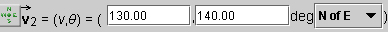
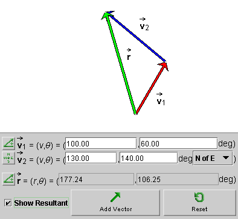
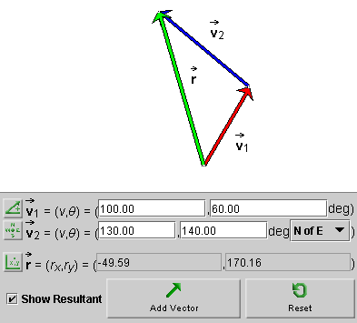
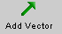
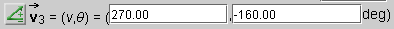
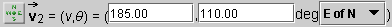
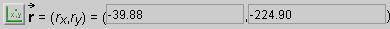

Four Ways of Specifying a Vector
Four Ways of Specifying a Vector
Exercise 1. Reset  the applet.
the applet.
Adjust the two vectors so that
 1 has a magnitude of
100 and an angle θ = 60o using the 'Polar (positive)' mode
and 2 has a magnitude of 130
and an angle of 140o N of E in the Navigational mode. The two
data entry panels should look those in the following Figure 1.
1 has a magnitude of
100 and an angle θ = 60o using the 'Polar (positive)' mode
and 2 has a magnitude of 130
and an angle of 140o N of E in the Navigational mode. The two
data entry panels should look those in the following Figure 1.

Figure 1
Remember that the applet lets you specify a vector in four ways. These four ways are explained in Help. The explanation is reproduced at the end of this page.

Exercise 1. After adjusting the two vectors as above, check the
'Show Resultant' checkbox to display the resultant (sum of the vectors).
The resultant vector  will be displayed
in green
and its two coordinates displayed according to the mode chosen. In
the snapshot in Figure 2, the 'Polar (positive)' mode is used.
will be displayed
in green
and its two coordinates displayed according to the mode chosen. In
the snapshot in Figure 2, the 'Polar (positive)' mode is used.

Figure 2
Exercise 2. Click the Mode toggle button for the resultant vector three times to cycle to the Cartesian mode, in which the (x,y) components are displayed. You should get the display shown in Figure 3 below.

Figure 3
Exercise 3. Change either 1 or 2 by dragging either vector at its tip.
Notice that the resultant is removed. Check the 'Show Resultant' checkbox again
to display the new resultant. Check that the same is true if the
entire arrangement of vectors is moved by dragging either 1 or 2.
Exercise 4. Click Add Vector  to add a third vector to the first two. Adjust the vector either by dragging its tip or by entering its coordinates, in the mode of your choice. Display the resultant vector.
Exercise 4. Reset the applet, and repeat the preceding exercises with different vectors.
Four Ways of Specifying
a Vector
The following four methods for specifying a vector are available. Choose between them by clicking the button to the left of the vector's data entry field. The button will let you cycle through the four possibilities.
This is the mode selected in the snapshot to specify the first vector. The vector is specified by its polar coordinates: magnitude and direction angle. The direction angle is taken between the vector and the 'East' direction. All angles are positive between 0 and 3600, increasing in the counter-clockwise sense starting with the East direction.
The magnitude of the vector is in pixels, in all four modes.

The snapshot above shows the coordinates of vector
3 in the 'Polar (pos & neg)' mode.
The vector itself is illustrated in the image at the beginning of this Help
document. The vector lies in the third quadrant.
The 'Polar (pos & neg) mode' is like the 'Polar (positive)' mode, except that the angles are taken to be in the range from -1800 to 1800. The angle is negative, as in the present example, if a vector points to a point below the horizontal axis, and it is positive otherwise.

The snapshot above shows the coordinates of vector
2 in the Navigational mode.
The mode is like the Polar (positive) mode,
except that angles are taken relative to one of the four compass
directions, either in the clockwise or counter-clockwise sense. This
allows for eight different ways of specifying the angle, from east of
north (E of N), to north of east (N of E), to west of north (W of N).
The choice can be made from a drop-down menu that becomes available in
the Navigational mode. All angles range from 0 to
3600.

The snapshot shows the resultant specified in the Cartesian mode. In this mode, a vector is specified by its x and y components relative to a pair of horizontal (x) and vertical (y) axes.